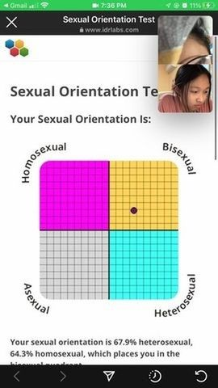
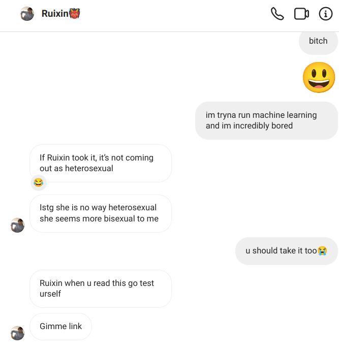
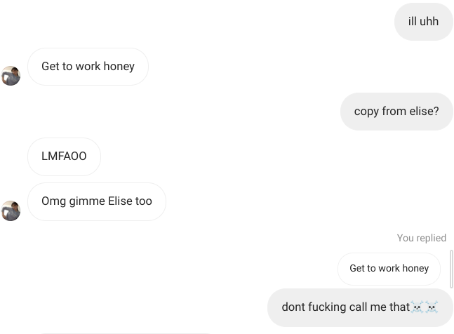
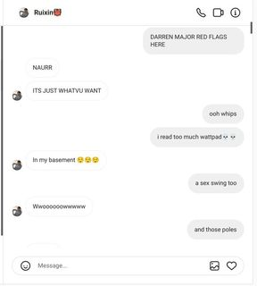
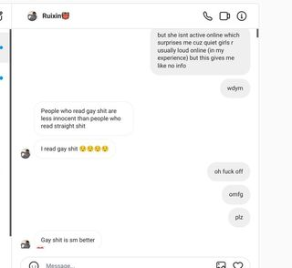

in classic internet shipping style
yes I learned this on tumblr bye-
disclaimer: these are very accurate as we know... yeah...totally
as you can see this is very gay behavior. as an asexual, i totally know what that means
i mean i also don't like getting kissed by boys. welcome to the club
what can i even say
.......
if not fruity then what? condescending? i refuse to believe
obviously straight people are all prudes so the very fact she knows about this means she's gay
she reads gay things. you know, things